By James Somers and Edwin Morris
I want to tell the story of a beautiful phenomenon in biology. In some sense it’s the prototype of much of the activity of life. The phenomenon is the way in which an individual cell of E. coli forages for nutrients. This process, known as “chemotaxis”—the “chemo-” for chemical and the “taxis” from the Greek τάξις, for tactics—is intelligence in one of its most elemental forms. An individual E. coli has no brain, obviously, and is even many orders of magnitude simpler than a human cell, and yet already it possesses something like a sense of smell, drive, even a memory. Chemotaxis recasts E. coli not as some aimless gut-pest but rather as an exquisitely sophisticated physical computer.
I’m also telling this story because I never liked the way biology was taught in high school. It was too much about the names of things. A subject so vast is spoiled by a textbook, which can only point, rotely, at the endless parade of stuff-there-is-to-know. It’s better approached in narrow, deep slices. Chemotaxis is a great slice: it’s a triumph of systems biology—we understand it holistically but also in fine detail at almost every level. It acquaints you with many of the most important motifs in biology, including the way in which protein structure determines function; how membranes control the information flow into cells; and how chemical modifications store and communicate state. It involves one of the most sophisticated and beautiful pieces of molecular nanotechnology, the flagellar motor. And it helps give an intuition for how a bag of unthinking chemicals could possibly give rise to a being.
The 30,000-foot view
The basic idea is this: E.
coli “smells” chemicals it’s attracted to with a set of nose-like receptors
on its front. If attractant is present, it uses its flagellar tails to swim forward—this is known as a
“run”—and otherwise it spins in a random direction (a “tumble”). By running when
the getting is good and tumbling when it isn’t, the E. coli takes a
meandering path toward the attractant.
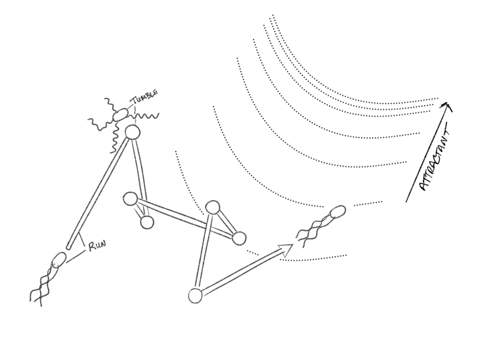
(Adapted from La Vecchia, “Bacterial chemotaxis in non-homogeneous shear flow”)
A little more detail now: there are half a dozen or so rotors on the E. coli’s body, each controlling a long whip-like tail that flows behind it. When all the rotors are spinning in the same direction, the tails join together into a coil that torques the cell forward into a run. When even one rotor is spinning against the others, the coil unbundles and E. coli spins into a tumble.
But how do the rotors know which way to spin? The connection between the nose and the motor is given by a signaling molecule known as CheyY (pronounced like “KEY-why”). CheY is constantly bouncing around in the cytoplasm of the E. coli. In its normal state, it binds to those receptors in the nose. But when a receptor encounters attractant, CheY gets chemically tagged and its shape changes so that now it has a strong affinity for the rotors. The modified CheY-p, as it’s known, binds to the rotor and, via a very cool mechanism that we’ll get into later, reverses the flagellum’s direction of spin.
You can see this process in action in the interactive illustration. Try adding some attractant.
[that same interactive illustration]
The default behavior of the rotors is to spin clockwise, which makes the E. coli tumble. When attractant is detected, the CheY gets transformed—“phosphorylated”—into a new shape that binds to the rotors. You can see that the cell is extremely responsive to attractant: just a tiny bit causes a flurry of phosphorylation of CheY into CheY-p. When enough CheY-ps attach to a rotor, it starts spinning counterclockwise. When all the rotors spin that way, the E. coli runs.
Given that setup, it may seem like the E. coli should be tumbling most of the time. But in real life, E. coli are near attractant often enough to be running a lot, and once they start a run, they tend to stay in it awhile: the chemical modifications that revert the rotors to their default states are tuned so that runs last on average about a second, or ten times longer than an average tumble. This ratio of run duration to tumble duration is crucial, as it defines the bacterium’s balance of “exploitation” versus “exploration”: if runs lasted too long, E. coli would range too widely and zip past their food; too short, and they’d likely never find it in the first place.
Why do you need all this complexity? You could imagine a system in which the motors themselves responded directly to attractant. We’ll see later on that the stream of CheYs acts as a kind of adaptable, tunable chemical amplifier. “Bacterial cells can amplify signals more than 50-fold; that is to say, a 2% change in receptor occupancy can bring about a 100% change in the output of the system at the flagellar motors. This feature allows cells to sense minute changes in concentration—less than three molecules per cell volume!”
The story gets more complicated: adaptation
If the system were as described above, then
the E. coli wouldn’t have much dynamic range. Imagine: if a mere three
molecules of attractant can set off a flood of CheY phosphorylation—enough to make the cell switch from
tumbling to running—then how could it possibly react any more aggressively to yet
more attractant? It’s way too keyed up.
In reality, the E. coli is equally responsive across five orders of magnitude of attractant concentration. The cell learns to treat whatever concentration it stumbles into as the new normal, so that the slightest increase triggers the same hypersensitive response as always.
The mechanism powering this adaptation is extremely clever. Each receptor is equipped with “struts” with little closed pockets in them. (There are some detailed illustrations of this later.) When the receptor is bound to attractant, its struts change shape so that these pockets open up, and become the targets for little molecules known as methyl groups. Methyl groups are ubiquitous in biochemistry: gene transcription, for instance, is heavily regulated by the binding of methyl groups to structural proteins your DNA strands coil around, called histones; the “methylated” histone can kink the DNA strand into or out of view of your transcription machinery, turning it on or off.
In this case, methylation serves to fill up the strut’s pockets, causing it to become more rigid. With more rigid struts the receptor’s signaling power is dampened: it takes more attractant to elicit the same response. Because there are many methylation sites per strut and many struts per receptor, there’s a wide range of possible dampening values—as if those pockets were really the holes of an elaborate wind instrument. This wide dynamic range is what allows the bacteria not just to find a favorable environment but to keenly and speedily nose its way up a chemical gradient. No wonder a similar mechanism is used by cells in your immune system to track and hunt down invaders.
Methylation of the receptors gives E. coli a “simple chemical memory.” This is a powerful and somewhat profound idea: individual bacteria can model their environment and remember important features of it by encoding that information in internal chemical modifications. E. coli “knows” the precise concentration of attractant in its surroundings going back several seconds; that helps it determine whether it’s swimming in a good or bad direction. Which is not that different in principle from what brains do. In fact one reason that it requires an artificial neural network of about a thousand elements just to model the computational capabilities of a single real neuron is that the real neuron stores so much “state” in its internal chemistry.
The full picture: a complex signaling network
[Chemotaxis: Molecular Events YouTube video]
The video above is a great overview of E. coli chemotaxis. It layers in even more detail, including not just the proteins that phosphorylate CheY but those that dephosphorylate it; and not just the proteins that methylate the receptors but those that demethylate it. What you come to see is that these doers and undoers define a sort of equilibrated circuit whose activity can be conveniently dialed up or down.
Dennis Bray describes these sorts of circuits nicely in his book, Wetware: A Computer in Every Living Cell:
In a typical signaling pathway, proteins are continually being modified and demodified. Kinases and phosphatases work ceaselessly like ants in a nest, adding phosphate groups to proteins and removing them again. It seems a pointless exercise, especially when you consider that each cycle of addition and removal costs the cell one molecule of ATP—one unit of precious energy. Indeed, cyclic reactions of this kind were originally labeled “futile.” But the adjective is misleading. The addition of phosphate groups to proteins is the single most common reaction in cells and underpins a large proportion of the computations they perform. Far from being futile, this cyclic reaction provides the cell with an essential resource: a flexible and rapidly tunable device.
If the cell really needs to change the concentration of the modified protein very quickly, it can. All it has to do is to switch on or shut off the phosphate-adding reaction and the concentration will fall precipitously—at the speed of the spinning cycle. There is no buildup of products or depletion of substrates to slow down the process, as there would be in a linear chain of enzyme reactions.
Regulation via phosphorylation and dephosphorylation (by “kinases” and “phosphatases” respectively) is an extremely general feature of life. “About 30–50% of human proteins contain covalently attached phosphate. [. . .] A typical mammalian cell makes use of hundreds of distinct types of protein kinases at any moment.” [Alberts]
Down the rabbit-hole…
One thing I don’t love in presentations of chemotaxis—and of biological concepts generally—is that they often prominently feature flowcharts and network diagrams. In the case of chemotaxis, as you can gather from the video above, there are many players with nearly indistinguishable names: CheA phosphorylates CheY to become CheY-p, and CheZ dephosphorylates it back to CheY; CheW couples CheA to the receptors, and CheR methylates those receptors’ struts; CheB, meanwhile, “clips off” the methyl groups added to the struts by CheR. A network diagram is no doubt useful for organizing this sea of names but in a sense it foregrounds the most abstract view of the process. I’d rather try to get a sense of the parts as a living whole or in their individual physical detail.
When you do that, it’s amazing what you find.
What does it mean for a receptor to detect attractant?
Almost every action in a cell
depends on proteins changing shape and binding to each other. It’s no different in the E.
coli receptor complex.
The way it works is that there are stimulus-specific proteins floating just outside the E. coli’s cell membrane, in what’s known as the periplasm. These proteins are “stimulus-specific” in the literal sense that they are shaped so as to bind favorably—in fact exclusively—with individual molecules of attractant. E. coli has five or six of these, for instance one that detects a crucial amino acid called aspartate. This sensor protein has little clefts in it that are shaped just so for molecules of aspartate to fit snugly into them. [Falke] In schematic form the aspartate receptor looks like this:
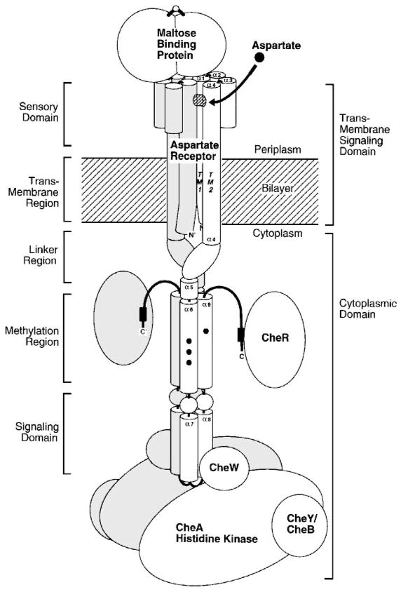
(Source: Falke, “THE TWO-COMPONENT SIGNALING PATHWAY OF BACTERIAL CHEMOTAXIS: A Molecular View of Signal Transduction by Receptors, Kinases, and Adaptation Enzymes”)
You can see that the sensory part—up top, where the aspartate binds—is connected to the signaling proteins CheW and CheA by a columnar structure that straddles the cell’s membrane. What does this protein complex “actually” look like?
An individual protein is small enough—like a few tens of nanometers wide—that it can’t really be seen through a light microscope. This receptor from top to bottom measures about 350 angstroms, or 35 nanometers. But modern biology is all about seeing the unseeable. Nowadays, we try to find out what nanostructures look like by X-ray diffraction or, more and more often, by cryo-freezing them in an electron microscope. Once we determine a protein’s structure it’s usually rendered using ribbon diagrams, a style invented by the biochemist Jane Richardson in the late 1970s. Here’s a ribbon diagram for the E. coli receptor:
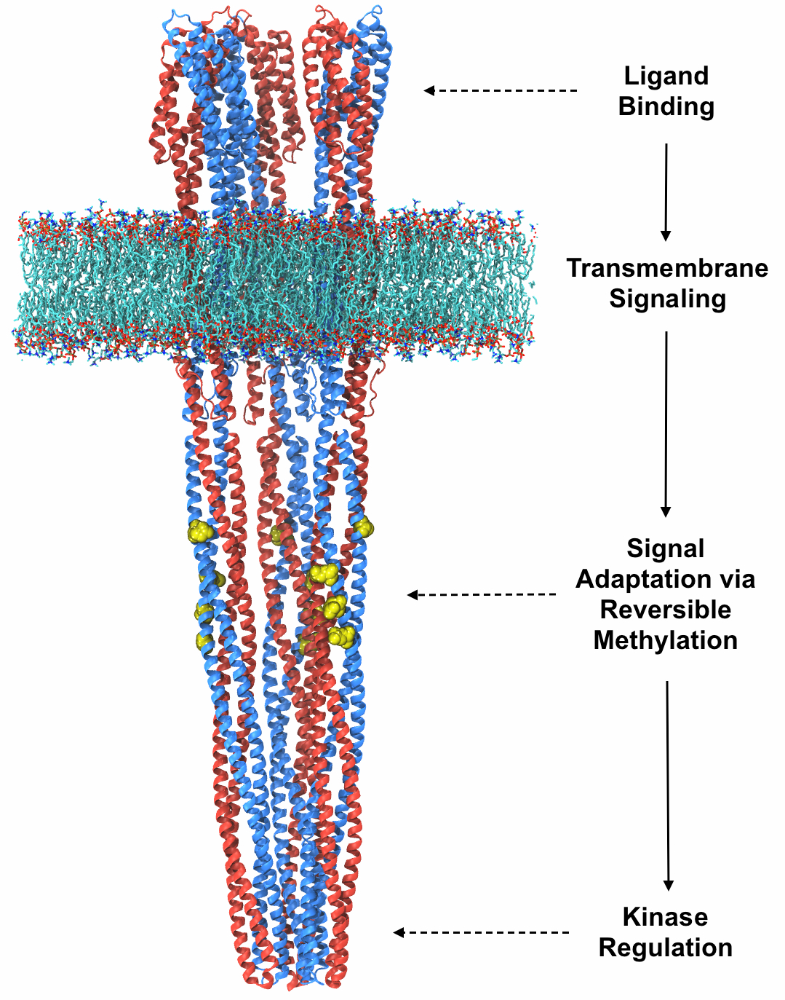
(Source: Keith Cassidy)
{kind=link}
This whole thing is the receptor. (Those parts just inside the membrane, with little yellow methyl groups lingering stuck to them, are the struts.) In effect it acts like one big piston: what happens is that when the asparate binds to the part in the periplasm, the columnar structure it’s attached to changes shape—it “dips” and “tilts”—in such a way to lock the thing that’s supposed to be phosphorylating CheY, the CheA kinase, into an inactive state.

(Adapted from: CheA conformation change, posted by Keith Cassidy)
When I think of a cell I imagine a Rube Goldberg–type contraption where an arm swings here, which drops a ball into a slide there, which rolls down and opens a trap door, which... eventually turns on or off some important cellular function. Indeed, E. coli’s “sense of smell” rests ultimately in a series of physical lock-and-key mechanisms, starting with literal molecules of e.g. aspartate nuzzling into a protein and transmitting that physical shape-change across the membrane.
This piston-shaped receptor protein is just one of a huge array arranged near the front of E. coli’s body. In cross section they appear almost to have been laid down through a lithography process, in a neat hexagonal pattern:
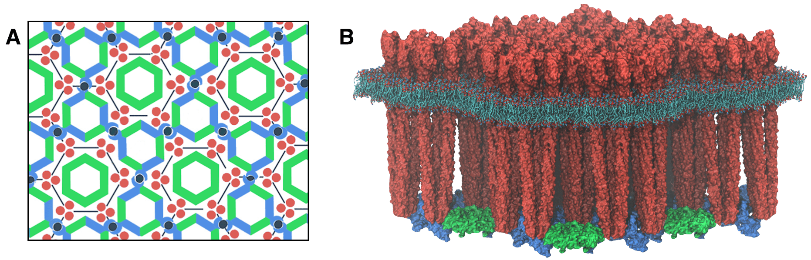
(Source: Theoretical and Computational Biophysics Group, UIUC)
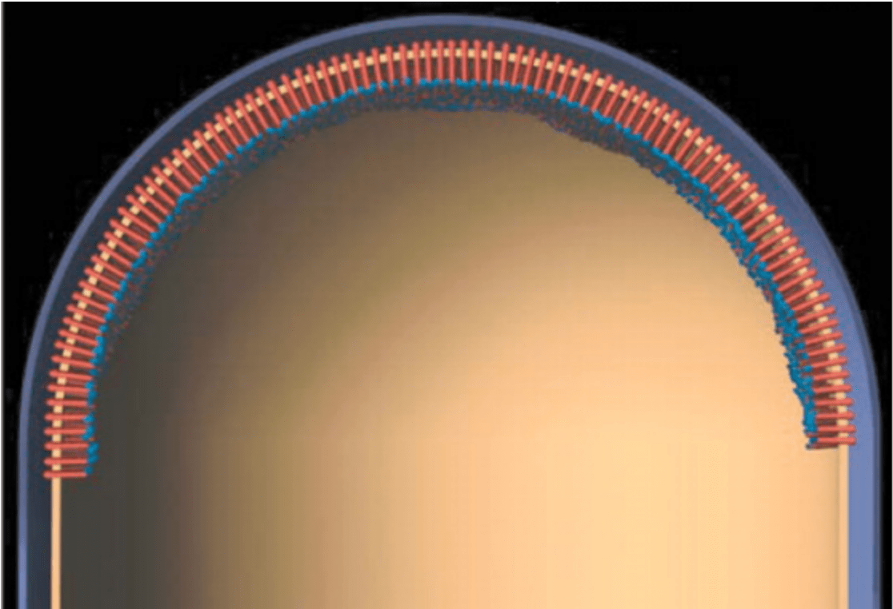
(Source: Direct visualization of Escherichia coli chemotaxis receptor arrays using cryo-electron microscopy)
Calling E. coli’s receptor complex its “nose” is no mere metaphor. Our own noses operate on a similar principle: when you smell a flower, it means that actual flower-molecules—possibly only a tiny number of them—have reached the inside of your nose and bonded to some protein with a specific affinity for that very molecule. This signal is then transmitted via nerves to your brain. The human nose has several hundred receptor proteins for smell; a dog has more than a thousand. Every one of our senses works like this. Touch is underwritten by proteins that get “squished” by tactile forces into cell membranes, triggering a set of downstream responses. Sight is my favorite example. There’s a protein called opsin that lives in the cells of our retina. What’s so cool about it is that the thing that changes its shape is a literal photon. That is, opsin converts the electromagnetic force of an incoming photon into a biomechanical / biochemical signal. This is why I tend to think of molecular biology as the science of shapes bumping into each other.
I think of E. coli’s receptor complex as a protoversion of our own sensory apparatus. Its nose has only five or six attractant-specific sensory proteins, but their signals are integrated—as if different sets of receptor-protein activations were playing different “chords” on the E. coli’s sensorium. “In short, the chemosensory array functions as an ultrasensitive, ultrastable biological integrated circuit or sensory chip.” [Falke 2]
How the signal is carried
So a bit of attractant binds one of the receptors, and lo, the
equilibrium inside the cell begins to shift. Because the CheA kinase is now active, CheYs start getting
phosphorylated much faster than they’re dephosphorylated. Recall that this is a
response that is dynamic, a flow that is tuned. The CheY-p concentration builds up. And then what?
A CheY-p is just a CheY with a little kink in it, caused by the phosphate group now bound to it. But this kink has a dramatic effect on its behavior. It now loses its affinity for CheA (the thing that activated it) and gains an affinity for a protein at the base of the flagellar motor. It ends up binding to that, which—we’ll see—flips the motor’s rotation, etc., etc.
But there’s something really important worth dwelling on here. When we say that CheY-p has an “affinity” for the motor protein, it’s not like it gets directed there; nor does it have some long-acting magnetic attraction for it. What this really means is that it has a strong inclination to bind to the motor protein when it gets really really close to it. Given how small a given CheY-p is in the scheme of the whole cell’s cytoplasm, it might seem improbable that it’ll somehow sidle up right next to one of these motor proteins somewhere on the other end of the E. coli’s body. But that gets at the heart of the crazy kinetic chaos inside our cells.
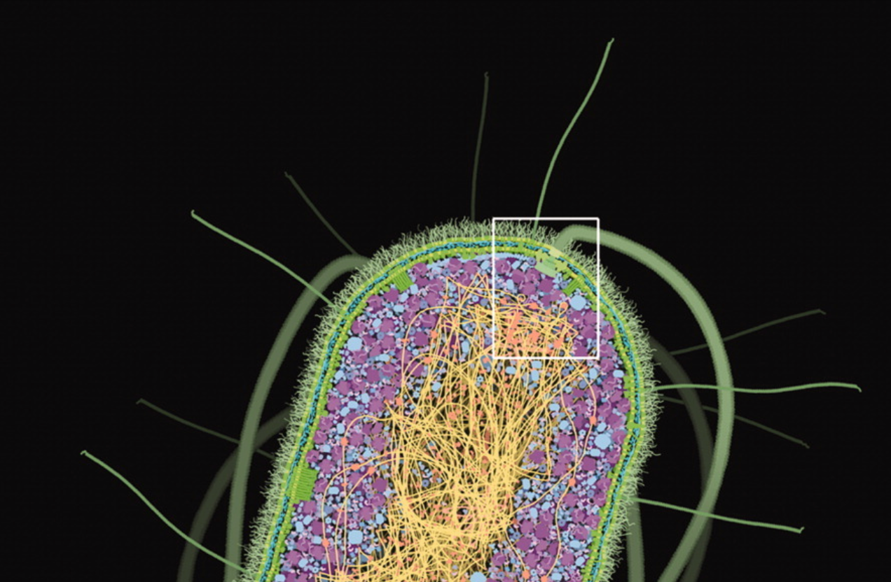
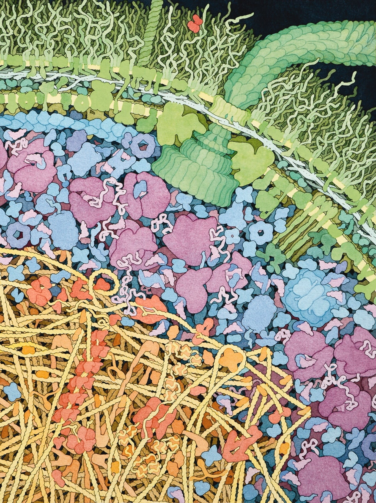
(Source: David Goodsell, The Machinery of Life)
Cells are dense with stuff, but everything in it is also extremely fast-moving:
To get an idea of how fast this motion is, imagine a typical bacterial cell, and place an enzyme at one end and a sugar molecule at the other. They will bump around and wander through the whole cell, encountering many molecules along the way. On average, though, it will only take about a second for those two molecules to bump into each other at least once. This is truly remarkable: this means that any molecule in a typical bacterial cell, during its chaotic journey through the cell, will encounter almost every other molecule in a matter of seconds. [Goodsell]
Just to put this in perspective: imagine you took an E. coli cell and scaled it up so that it was the length of a football field. And imagine you kept all the physics the same. A water molecule would be about an inch wide; a protein would be about the size of a basketball. The proteins would be juddering violently due to the thermal motion of the water particles bombarding them—so violently in fact that if left unchecked they’d be moving at 500 meters per second. But they aren’t left unchecked: if you were in such an environment it would be so crowded as to be nearly impossible to see. What you really get, then, is an incredible ceaseless shaking and bouncing-into-each-other of all the component parts.
This is why shape changes that lead to different bonding affinities are so important in biology. It’s as if inside a cell everyone is constantly going up to everyone else, seeing if they fit together. Proteins sample the space of interactions with other proteins so quickly that for a long time, most biologists didn’t really contemplate where in the cytoplasm two reactants lived; they knew that you never had to wait too long for them to meet each other. In fact it was a relatively recent discovery that inside the cytoplasm certain proteins that share functional relationships do seem to keep especially close together, inside little oil drops known as “phase-separated liquids.” Weak interactive forces between the floppy tails of different proteins cause them to spontaneously “phase separate” into these more viscous pools, and this biases them to interact more frequently.
The rate-limiting step in E. coli’s reaction to attractant is the time it takes for CheY-p to diffuse from the nose to the motor. It takes about a tenth of a second. The journey has actually been tracked on camera, using a fluorescent version of the protein:
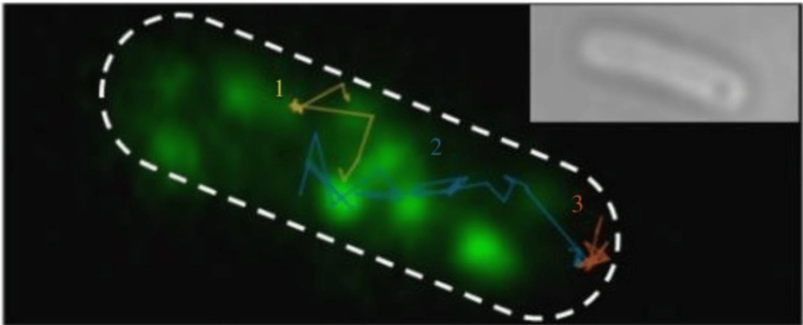
(Source: Single-molecule imaging of electroporated dye-labelled CheY in live Escherichia coli)
What happens when the signal reaches the motor?
Let’s talk about these motors. These
things are so intricate and beautiful and seem so reminiscent of machines we’d engineer ourselves that
they’re sometimes cited as evidence for intelligent design.
The flagellar motor operates with nearly 100% energy efficiency, near the limit of thermal noise. It spins at about 1,500 rotations per second. And the craziest part is that like all molecular nanomachines it is entirely self-assembled. There’s an amazing 30-minute documentary available on YouTube that details the mechanics of the self-assembly process—and, refreshingly, profiles some of the scientists who figured it out, describing the methods they used to make their discoveries.
(Source: Self-Assembling NanoMachine: a film about flagellar biosynthesis)
My favorite part of the self-assembly process is that after building a base for the rotor, a sort of tunnel is built and the proteins that comprise the whip-like “hook” of the flagellum are extruded through it—as if the flagellum were built by vomiting forth parts of itself.
Anyway, at the base of each rotor there are a series of proteins called FliG, FliM, and FliN—pronounced like “Fly G,” “Fly M,” “Fly N”—to which CheY-p, our Frodo-esque bearer of the message from the nose, attaches once it finally arrives. CheY-p has a strong affinity for FliG and will readily glom onto it. We’ll see how that actually affects the flagellum in a second. But for now it’s worth noting that there’s a thresholding mechanism here: just one CheY-p attaching to FliG won’t be enough to flip the motor from counter-clockwise to clockwise (thereby causing a tumble)—it actually takes a handful of CheY-ps conspiring to make that happen. In fact the motor has something like seven states, from rotating quickly counterclockwise at three discrete levels of decreasing speed—as if stepping through three gears on a bike—to stalling entirely, to starting back up again in the clockwise direction, also with three speeds.
Even as the motor is in the process of changing direction, any CheY-ps that do attach to FliG are under constant threat of being removed by yet another player, CheZ. That is, the proteins that would reverse the motors are subject to removal by other proteins that un-reverse it. Again we have a responsive regulatory circuit reminiscent of the one that phosphorylated and de-phosphorylated CheY in the first place upstream at the receptor. The idea is that every effect is reversible, and in fact is reversed at a regular rate. This means that in the absence of further signal the cell will quickly return to baseline.
How does the motor actually change directions?
As a matter of pure mechanics this might be
the most ingenious part of the story. It took quite a long time to figure out and even still it seems that
we’re not entirely confident with our explanation. But the mechanism that’s been proposed is that
CheY-p binds to a protein called FliM (“Fly EM”) embedded in that ring that defines the base of the
rotor. This tilts it and causes a 90-degree rotation in an attached protein called
FliGc. That protein sits at the interface between the rotating part of the motor and
the so-called “stator,” which drives it from the part that’s anchored solidly in the cell
membrane.
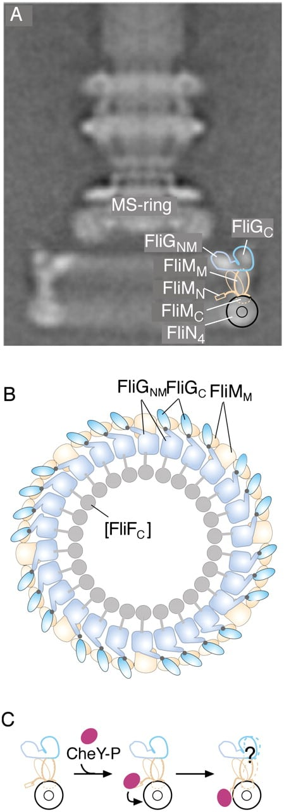
(Source: A molecular mechanism of direction switching in the flagellar motor of Escherichia coli)
When FliGc changes orientation, the stepper-motor-like cycle that normally drives the motor counterclockwise starts driving it clockwise instead. In the illustration below, Figure A shows the stator, i.e., the driving mechanism of the motor. It works by stepping back and forth between the “open” and “closed” states, schematized by the 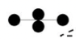 and symbols respectively. In Figure B you can see how, in the normal CCW direction, the repeated cycling between these two states drives the “teeth” of the motor—the crucial FliGc proteins, here tilted left-to-right.
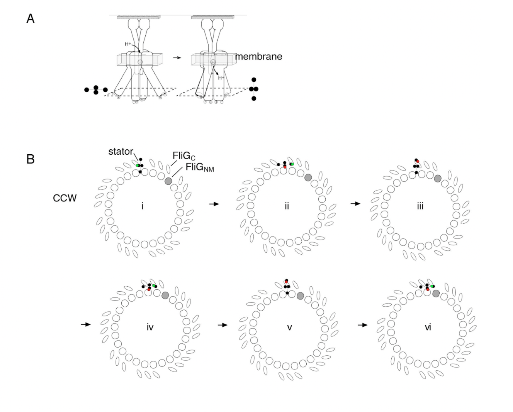
(Source: Supplementary figure S9, A molecular mechanism of direction switching in the flagellar motor of Escherichia coli)
When the CheY-p arrives at the rotor it has the effect of flipping the FliGc proteins so that now they tilt right-to-left. In that orientation the step-drive action works the opposite way, and the motor rotates clockwise:
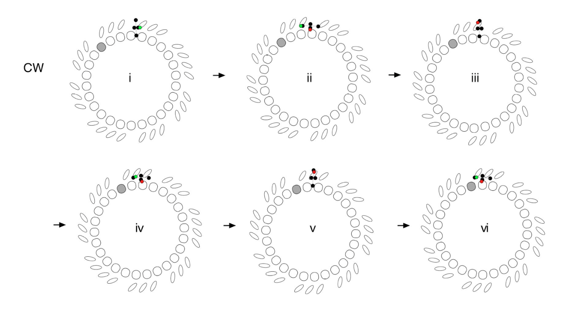
You can see this more clearly below in this animated version of those figures. The animation starts by showing the clockwise motion; dwells on the orientation change of the FliGc proteins; then finally continues roating counterclockwise.
It’s a shame that the paper presenting this theory didn’t include such an animation, because that by far is the most natural way to consume this information. It speaks to the fact that creating animations is really hard! (It took several hours even to produce this crude version.) Per Bret Victor’s talk Stop Drawing Dead Fish, making moving pictures shouldn’t be so difficult. If it were easier, such animations would spread everywhere in scientific communication, because so often what a paper describes is some kind of dynamic process. Dynamic illustrations would help readers grasp proposed mechanisms more quickly. As it is, someone who understands a complex mechanism usually has to explain it, in patient detail, to someone who’s good at animating; this costs time and money; and most people simply opt not to go through with it. Perhaps, someday, the process will be democratized by better tools, or a multimodal AI system.
How the motor changing directions causes the E. coli to tumble
The final part of the
story—for me, anyway; there’s a lot more to explore!—is why exactly the clockwise rotation of
just one of the flagellar motors would send the whole cell a-tumbling. It helps to understand how the thing
works in “run” mode, when all the flagella are oriented the same way.
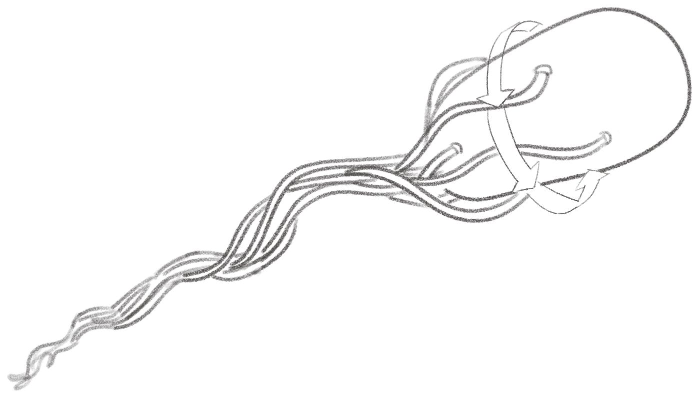
(Traced from: How Escherichia coli Move | National Science Foundation)
Even though this bundle of flagella sort of looks like a propeller, when you actually think about it, that’s not really what it is. It’s more like a pig’s curly tail that spins with a whip-y sort of motion. How exactly does that propel the entire cell? A wonderful book called Random Walks in Biology gets into the physics in some detail:
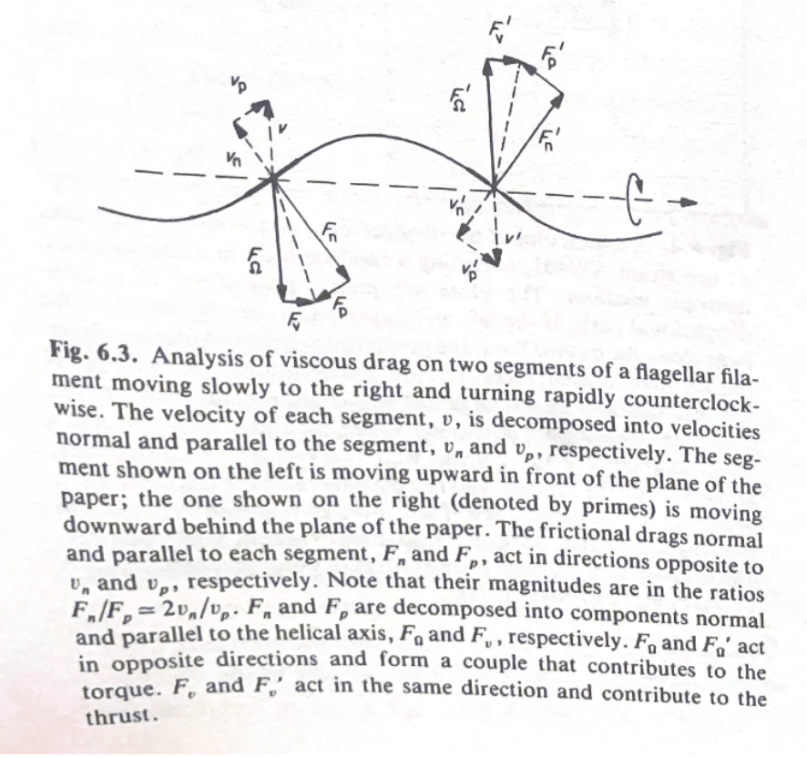
(Source: Howard C. Berg, Random Walks in Biology)
To get a grip on things like this, it helps to have a model of some kind that you can hold in your hand. And actually the question of how separate filaments running in phase near each other would come to bundle was explored nicely in this paper. The authors used physical models of the flagella by wrapping hollow Tygon tubes around a mandrel and filling them with epoxy. They then used a couple stepper motors to drive the counter-clockwise rotation. “The flow field generated by each helix tilts the other helix, causing the helices to roll around each other and form a right-handed wrapping”:

(Source: Macro Scale Model E.Coli Flagella Bundling)
Individuality in the bacterial population
We tend to think of a colony of something like
E. coli as an undifferentiated evil goo, each bacterium identical to its neighbors.
But people who’ve studied these organisms under the microscope observe a surprising amount of individual
personality. A 1976 Nature paper,
“Non-genetic individuality: chance in the single cell,” explores variation in the context of
chemotaxis using strains of Salmonella and Enterobacter bacteria.
The paper came out before the exact mechanism behind chemotactic regulation was well-understood; all the authors knew was that “control of tumbling can be rationalised as caused by changes in the levels of a tumble regulator.” They hypothesized that although bacteria of the same strain would all share the exact same DNA, there might be a relatively small number of copies of that “tumble regulator,” and natural variation in the transcription, translation, and destruction of these regulator proteins could account for differences in behavior. Their experiments were mostly at the behavioral level. They observed how different individuals—including those in a particularly “tumbly” mutant strain (I love that word)—reacted to environments with and without attractant, and found plenty of variance.
Their theory was spot-on. We talked above about how E. coli adapt to higher and higher concentrations of attractant via a clever methylation mechanism. Well, it turns out that the methylation of the receptor struts is governed by only about 100 CheR proteins in the cell. The number of those proteins—along with CheB, which un-methylates the struts—determines the speed of the “futile cycle” that reacts to changes in attractant concentration. That is, it affects how quickly the bacterium adapts when the concentration goes up and refracts when it goes down. [Gore 1:06:30] Because 100 copies of CheR is so extraordinarily tiny in the context of the full cell buzzing with something like ten million proteins, variation by just a handful can have a relatively large effect on the cell’s behavior. [Gore 1:13:20] That helps account for why different E. coli with the exact same genetic sequence will tumble and adapt at different frequencies.
How did we figure all this stuff out?
We don’t yet have the technology to just
observe all of the activity inside a living cell. That Goodsell painting above that shows the crowded cytoplasm
packed with proteins is an artistic composite—backed by rigorous research to be sure—because
there’s no way to capture all the different players in situ at once. And obviously it’s a
“still life,” not a video. So how could we possibly know all this detail about what exactly a given
protein looks like, and how and when it interacts with others to kick off some particular part of the chemotaxis
process?
There seem to be three or four major kinds of experiment. Probably the most important is genetic: you can selectively disrupt one gene at a time and, by observing how the mutant E. coli behaves, begin to get a grip on each gene’s function. All of the proteins “CheY,” “CheZ,” “CheW,” and so on are named simply because they are the products of genes that, when excised, “cause a general defect in chemotaxis.” [How Bacteria Sense and Swim] As you can imagine, identifying all of these is painstaking work, and involves a considerable amount of clever inference. For instance you might observe that without gene X the bacteria never seems to tumble; is that because that gene is involved in recognizing attractant or in forcing the rotor to run clockwise?
Once you have a hypothesis, a second kind of experiment involves purifying some subset of these proteins-of-interest in vitro to see how they work together to form a particular signaling pathway. For example you could put CheA and CheY along with some phosphate groups and other necessary reactants and observe whether and how much phosphorylation takes place. That’s what the authors did in this paper in Cell, in 1990. They used a radioactive version of phosphate as a tracer. “Incorporation of [32P]phosphate into CheA or CheY was determined by excising the radioactive band out of the dried gel and quantitating in scintillation fluid or by analysis of the intact gel using a Phosphorimager (Molecular Dynamics, Sunnyvale, CA) and compare with known radioactive standards.” Another common method for observing in vitro dynamics is to genetically modify proteins to fluoresce; or to “find” a protein in solution using an antibody that recognizes some part of it—you attach that antibody to another protein, and that one you fluoresce, so you can find the hidden one.
To understand the literal lock-and-key mechanics at a particular binding site—for instance how exactly a molecule of aspartate causes a receptor to deform, kicking off a signaling cascade—involves “structural” biology work, i.e., taking pictures of individual proteins or, increasingly, ensembles of them in situ. For this you can use X-ray crystallography, nuclear magnetic resonance imaging, cryo-electron microscopy, super-resolution light microscopy, or some combination.
A group at University of Illinois at Urbana-Champagne uses atomic-scale molecular dynamics simulations, in software, to understand structural details—like the exact way that CheA changes shape to kick off a downstream signaling process—that wouldn’t be apparent from high-resolution imaging alone.
Sometimes you can’t get a direct picture. It may require deduction to understand, say, how exactly a protein fits in. One experiment found that CheA didn’t bind to a receptor except in the presence of CheW; that plus the fact that adding too much CheW into the mixture actually led to a decrease in the ability of CheA–CheW complexes to bind receptor suggested that CheW competed with that complex for the binding site on the receptor and that therefore it must sit between the receptor and CheW in the receptor–CheW–CheA trimer [Cited in Blair]. Biology is lousy with heroic inferences like that. It’s a world that’s hard to see; sometimes you just have to imagine what’s going on down there, and back up those imaginings with the right experiments.
The very idea that bacteria run and tumble came from experiments published in 1972 by Howard Berg and Douglas Brown, who used a special three-dimensional tracking microscope of their own design to watch the little suckers in action. (A fun fact is that they called the non-runs “twiddles” instead of “tumbles.”) Some of the physics of flagellar propulsion—like how much force the little tails generate—was discovered later by tethering the flagella to a microscope slide: you can then measure how fast the E. coli’s body spins. We know that bacterial flagellar motors are powered by the proton motive force from a 1977 paper that measured how cells ran or “twiddled” in the presence or absence of an electrical potential. But the research has become even more refined than that. Just by observing the strength of the rotation under various conditions—different viscosities, temperatures, and so on—we know that “rotation is tightly coupled to proton flow, with a fixed number of protons (~500) used to drive each revolution.” [Blair] Think of how detailed an understanding we’ve gotten!
One reason I’m particularly attracted to studies of E. coli chemotaxis is that it’s an early star of what’s been called “in silico” biology. It’s been the subject of many computer models. Dennis Bray, the author of that book that put me onto this stuff in the first place, made one of the more popular models. Here’s a nice still shot of the model in action:
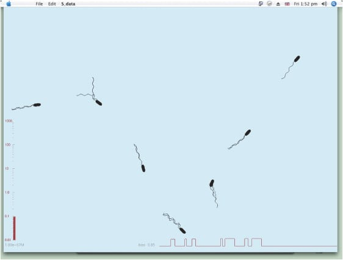
Maybe the chief role of a computer model is that to get it working in the first place you have to explicitly articulate every one of your assumptions. In much the same way that writing tends to clarify your thinking (or at least reveal how unclear it really is), a computer model forces you to synthesize what you know. (Though if anything it’s even more exacting than a blank page.)
Once you have a model, you can use it to explore variations on those assumptions. “The program gives the correct phenotype of over 60 mutants in which chemotaxis-pathway components are deleted or overexpressed,” Bray writes. At best, a good enough model lets you discover things you didn’t already know, or suggests your next experiment. “In order to match the impulse response to a brief stimulus [. . .] we also had to increase the activities of the adaptational enzymes CheR and CheB at least an order of magnitude greater than published values.”
So what?
Why should you care about E. coli chemotaxis? A
typical answer to that sort of question—and I’m sure the answer given in many of the grant
applications supporting the work cited here—is that there are medical and practical uses. For instance: if
you understand the signaling pathways of bacterial chemotaxis you can disrupt them; that work might lead to a
new kind of antibiotic, which, in an era of increasing resistance, is direly needed. Or you might say that
chemotaxis is used by the hunter-cells of your immune system to track down and clean up the cancerous, the dead,
or the infected; understanding how it works can help make those cells work better, or disrupt their
disrupters.
More generally you might say—and in fact I led with this up top—that understanding this specific phenomenon equips you to understand all kinds of others. “Bacterial two-component pathways [def’n] control a dazzling array of functions including cell division, virulence, antibiotic resistance, metabolite fixation and utilization, response to environmental stress, sporulation, and taxis.”
But I dunno, to me the real reason is that it’s neat. It’s just fun to find out about. “To learn, and at due times to repeat what one has learnt, is that not after all a pleasure?”
Annotated bibliography
Bray, Dennis. Wetware: A Computer in Every Living
Cell. 2009. This is the book that kicked off my interest in E. coli chemotaxis. Bray built computer
models of the network of interacting parts that give rise to E. coli’s sophisticated foraging
behavior—an early example of in silico “systems biology.” This
is a very evocative book, giving you a newfound appreciation for the computational power of an individual
cell.
“Chemotaxis: Molecular Events.” A superb video that gives an overview of everything you need to know about chemotaxis. I think this was prepared for Molecular Biology of the Cell, the textbook cited below. Is it sufficient to just watch this video and be done with it? Maybe, but for some reason I had a bunch of questions I still wanted answered that led me to all this other stuff.
Webre, Daniel J. et al. “Bacterial chemotaxis.” Current Biology, Vol 13 No 2, 2003. Good short overview article, like an encyclopedia entry.
Gore, Jeff. “Robustness and Bacterial Chemotaxis.” 2014. This is a truly awesome lecture that gives you a sense of the majesty of bacterial chemotaxis and also of the weird physics of the microscopic world (which Gore calls “Life at low Reynold’s number”). This lecture is part of Gore’s MIT Systems Biology course, available via MIT’s amazing OpenCourseWare initiative.
Alberts, Bruce et al. Molecular Biology of the Cell, 7th edition, 2022. The meme bio textbook. It’s good, and I actually in my adulthood paid for a digital copy of this thing. I refer to it every so often—actually maybe just twice since I paid for it. It feels handy, the kind of known-good and deep source it’s helpful to have for answering your own and others’ basic questions. One thing that strikes me about this book, excellent as it is, is that it’d probably be a tough way to actually learn biology. Instead, try the stuff cited in the “Reading list” at the bottom of this post.
Falke, Joseph J. et al. “The Two-Component Signaling Pathway of Bacterial Chemotaxis: A Molecular View of Signal Transduction by Receptors, Kinases, and Adaptation Enzymes.” 1997. A really nice paper that tells the basic story, if in somewhat forbidding technical language.
Falke , Joseph J. et al. “Architecture and signal transduction mechanism of the bacterial chemosensory array: Progress, controversies, and challenges.” 2014. Another good review-ish paper.
Bray, Dennis et al. “Computer Simulation of the Phosphorylation Cascade Controlling Bacterial Chemotaxis.” 1993. A good example of in silico biology.
Bray, Dennis et al. “The chemotactic behavior of computer-based surrogate bacteria.” 2007. Another, later paper by Bray with a more detailed computer model.
“Bacterial Chemotaxis.” A nice page from the Theoretical and Computational Biophysics group at the University of Illinois at Urbana–Champaign.
Cassidy, C. Keith. Personal website. This fellow used to work at the UIUC group in the previous reference. He may be the expert on the chemotaxis signaling complex.
Beniaguev, David et al. “Single cortical neurons as deep artificial neural networks.” 2021. A paper showing that “cortical neurons are well approximated by a deep neural network (DNN) with 5–8 layers.”
Koushik, Paul et al. “A molecular mechanism of direction switching in the flagellar motor of Escherichia coli.” 2011. This is where all those great diagrams showing a hypothesized mechanism for the rotor switching come from. I only wish they’d animated them! (Maybe they felt that they were already out on a limb, and making a video of a proposed mechanism would make it seem realer than it deserve to be? Or maybe they just thought it was too hard.)
Berg, Howard. “Swimming Escherichia coli.” Archived web page with lots of videos of E. coli in motion. Berg was one of the OG chemotaxis people, and also wrote the amazing Random Walks in Biology, cited below.
Alon, U. et al. “Robustness in bacterial chemotaxis.” 1999. I don’t know if I understood this paper all that well, except to get the point that the chemotaxis system doesn’t rely on there being some precise concentration of any of the component parts, e.g. CheY. Like many biological systems it works in the face of lots of gotchas and what-have-yous.
“Self-Assembling NanoMachine: a film about flagellar biosynthesis.” A documentary (!) about the way that the bacterial flagellar motor is made, and the various discoveries that elaborated the process. Pretty hard to believe that this documentary exists—but, there it is. It’s awesome.
Di Paolo, Diana et al. “Single-molecule imaging of electroporated dye-labelled CheY in live E coli.” A near paper showing the tracking of CheY through the cytoplasm.
MunJu, Kim et al. Macro Scale Model E. Coli Flagella Bundling. YouTube video from this paper. 2003. Uses the drill and tubing to simulate flagellar bundling.
Sarkar, Mayukh K. et al. “Chemotaxis signaling protein CheY binds to the rotor protein FliN to control the direction of flagellar rotation in Escherichia coli.” Pretty clear title!
Vladimirov, Nikita. “Multiscale modeling of E.coli chemotaxis.” Github project page. Here’s a model I tried to actually run—and shockingly, it worked out of the box. Sadly it didn’t show little virtual E. colis running and tumbling around on my screen, but still pretty cool.
Blair, D F. “How bacteria sense and swim.” 1995. A really well-written review article.